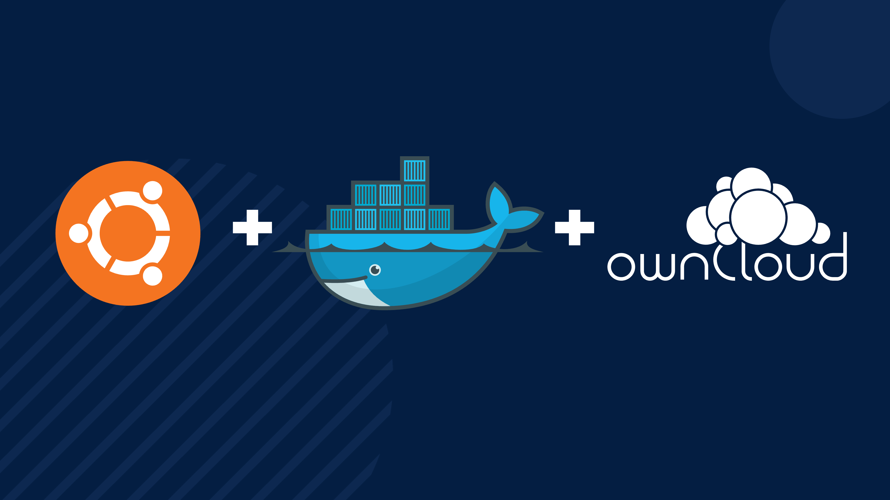
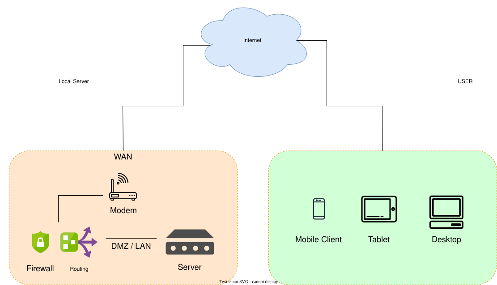
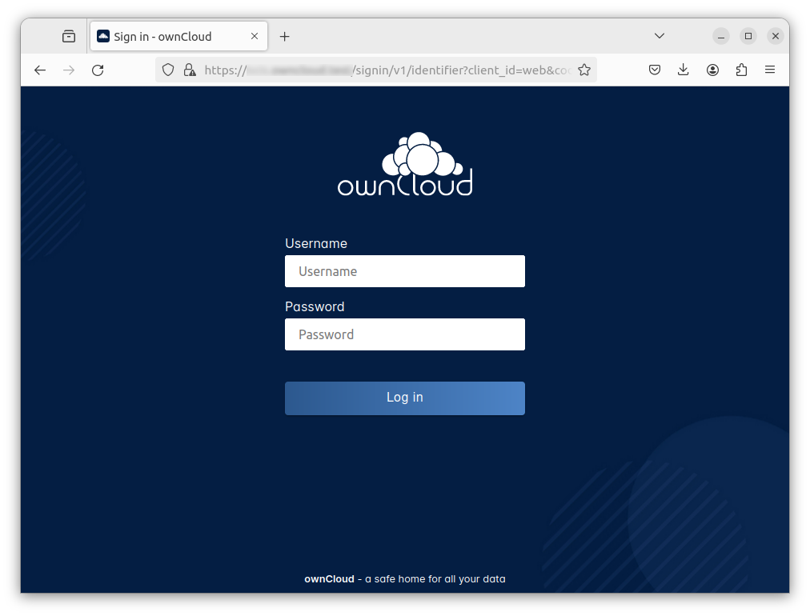
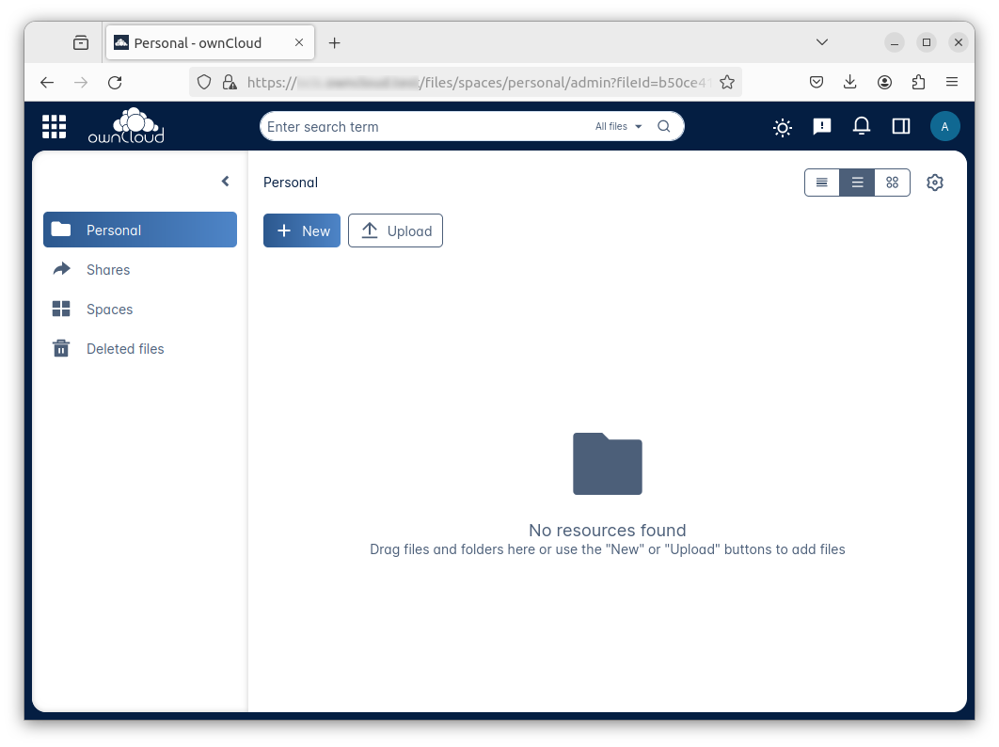

Install Infinite Scale on a Server

- Introduction
- Requirements
- Accessing Infinite Scale
- Limitations
- Add the IP Address to the Domains
- Prepare the Server
- Download and Transfer the Example
- Extract the Example
- Edit the Configuration File
- Certificate Generation Process
- Start the Deployment
- Stop the Deployment
- Change Settings
- First Time Login
- Monitor the Instance
- Infinite Scale Command Line
- Admin Password
- Volume Migration
- Updating and Upgrading
- Certificate Renewal
Introduction
Install Infinite Scale using Docker Compose on a server for production use. The aim of this guide is to be up and running as fast as possible using a deployment setup that includes Infinite Scale and web office applications for document collaboration for home usage or small businesses. It also uses valid certificates from Letsencrypt.
| There are several decisions and steps that need to be taken when setting up and configuring the server. We strongly recommend that you read the manual and not just try to copy and paste commands. |
| This guide references the latest rolling version of Infinite Scale. |
| With this setup, each deployment only contains one instance of Infinite Scale. |
Requirements
Hardware
This guide describes an installation of Infinite Scale based on Ubuntu LTS and docker compose. The underlying hardware of the server can be anything as listed below as long it meets the OS requirements defined in the Software Stack:
-
Raspberry Pi (4 and higher)
-
Bare Metal Server
-
Virtual Machine
-
…
|
Knowledge Stack
You, as administrator, must have the following minimum knowledge stack.
-
Being capable to order and configure external accessible domains.
-
Being capable to configure:
Router, Firewall, NAT, DHCP, networks etc. -
Command line (bash) tools like:
ssh, actions on files, edit files etc. -
Maintaining a server:
Setting or changing hostnames, IP configuration, installing software packages etc.
Software Stack
Ubuntu LTS 24.04 has been selected as the operating system, but it will also work with Ubuntu LTS 22.04. If you already have a server running Ubuntu LTS 24.04, you can use it as long as it meets the requirements listed below
Note that this guide expects:
-
A server with the operating system installed and all required software other than Infinite Scale, such as docker and docker compose, installed and preconfigured, and all software updated to the latest version.
-
You have at least shell access and can ssh to your host from another machine on your network. You may need
sudopermissions for some steps later in the setup.
Volumes
Volumes are where Docker stores data. In short, Docker can handle two types of volumes:
-
Volumes managed by docker:
These volumes are managed by Docker and, unless otherwise specified, are located in the same partition where the operating system is installed. While this is easy to use and requires no additional configuration, there are dependencies that should be considered, such as space sharing, snapshots, resetting, backup/restore, migration, etc. -
External volumes:
These volumes are not managed by Docker. You must provide Docker with a mount point for the volume, which can be a folder, partition, external storage, etc.
Note that the term volume can be used in different contexts. For example, Hetzner, as a provider of computing resources, uses the term volume to refer to a definable disk space that is independently provisioned and billed. Such a volume can then be attached to a Docker volume to store data.
Other Requirements
- Firewall
-
Because the server configured is exposed to the internet, we highly recommend configuring a firewall for security reasons. Configuring a firewall is not part of this document.
The minimum configuration for the firewall is to allow TCP port 22, 80 and 443. We also recommend to allow ICMPto be able to ping the server. - Domain Name and Routing
-
To access Infinite Scale from the internet, you must:
-
Own a domain name which will get multiple subdomains configured.
-
You can also use a wildcard operator for the subdomains in the DNS configuration. In cases where you already use subdomains for other purposes, we recommend using a subdomain as an entry point and adding the wildcard operator there to allow for different IP configurations.
-
-
The IP address of your WAN needs to be used for the (sub)domains configured.
Note that you can use any domain provider of choice.
-
The following data is required to configure the Infinite Scale eMail setup, see the notifications service for more details.
|
-
SMTP_HOST
SMTP host to connect to. -
SMTP_PORT
Port of the SMTP host to connect to. -
SMTP_SENDER
An eMail address that is used for sending Infinite Scale notification eMails like
ocis <noreply@yourdomain.com>. -
SMTP_USERNAME
Username for the SMTP host to connect to. -
SMTP_PASSWORD
Password for the SMTP host to connect to. -
SMTP_AUTHENTICATION
Authentication method for the SMTP communication. -
SMTP_SECURITY
Define using secure or insecure connections to the SMTP server.
Domain Names
This environment requires multiple (sub)domain names to be available. You will need to modify the examples to suit your environment. The (sub)domains must be configured to point to the server you are configuring. The same applies if you are using a wildcard configuration. For a wildcard setup on the DNS, these (sub)domains must be provided to configure the .env file described in one of the next sections.
The following (sub)domains are required as a minimum, an example is printed for each, replace them according to your environment:
-
OCIS_DOMAIN
ocis.yourdomain.com
-
COLLABORA_DOMAIN
collabora.yourdomain.com -
ONLYOFFICE_DOMAIN
onlyoffice.yourdomain.com
Note that depending on your setup, more (sub)domains may be required. See the .env file for more details..
Note that any communication between ocis and any web office application is handled via the docker network and is not exposed to the outside.
Accessing Infinite Scale
Infinite Scale can be accessed from the Internet and from your local network via a browser using the URL defined in OCIS_DOMAIN:

Limitations
- Data Location
-
Unless otherwise set up and configured, all data is stored in volumes managed by Docker on the same partition of the server. If you want to define your own volume paths, provide the paths and configure them in the
.envfile. This is highly recommended for production environments and is described in the Hardware and Volumes sections above. - User and User Access Management
-
The following embedded services are well suited for home and small business use, although Infinite Scale can be configured to use external products that are relevant to larger installations and are not covered here.
-
Infinite Scale has an embedded identity management (IDM [1]) that takes care of creating, storing, and managing user identity information.
-
In addition, it also has an embedded Identity Provider (IDP [2]) to track and manage user identities, as well as the permissions and access levels associated with those identities.
-
Add the IP Address to the Domains
Once the server is finally set up, you will need to use the IP address assigned to your WAN to configure DNS mapping at your DNS provider. If you have allowed ICMP requests in your firewall settings, you can then ping your server using one of the defined domain names.
Prepare the Server
As a standard periodic task, you will need to update packages, especially after the first server login. Open a shell on the server and issue the following command:
apt-get update && apt-get upgradeInstall Required Software Packages
Note that we do not recommend using the Ubuntu embedded Docker installations as they may be outdated, but rather installing and upgrading them manually to get the latest versions.
- Docker Engine
-
Follow this guide to install
docker: Install using the apt repository. - Docker Compose
-
Follow this guide to install
docker compose: Install the Compose plugin. - unzip
-
The
unzippackage may not be available. In this case, install with:apt install unzip
Download and Transfer the Example
The client that downloads the example is not the server that you upload to. The server does not have a graphical user interface (GUI) and therefore does not have a browser. The sample commands below are based on a Linux client. If you are using MacOS or Windows, you will need to modify the commands accordingly. This mainly affects the location where the browser downloads to (~/Downloads).
|
The client from which you download the example via a browser and upload it using scp must have access to the server and have the scp application installed.
|
To download and extract the necessary deployment example [3], open a browser and enter the following URL. Note that this link also contains patches for release: 8.0.0.
The .zip file will be downloaded to your local Download directory.
Upload the resulting .zip file to the server by issuing the following command, replace root@182.83.2.94 with the username and address of the server according to your setup:
scp ~/Downloads/'owncloud ocis stable-8.0 deployments-examples_ocis_full.zip' root@182.83.2.94:/optNote that the command is slightly different on Windows due to the way the home directory and path separator are defined.
With the next step, if you have already unpacked this file before, or if you intend to update an existing extract with a new compose version downloaded, the .env file will be overwritten without notice, and you will need to reconfigure this deployment!
|
Extract the Example
Login into the server and:
-
Create a subdirectory to store all Compose files and folders.
mkdir -p /opt/compose/ocis/ocis_full -
Extract the zip file to the directory by issuing the following command:
unzip -d /opt/compose/ocis/ocis_full \ /opt/'owncloud ocis stable-8.0 deployments-examples_ocis_full.zip' -
If files have been extracted, list the directory with:
ls -la /opt/compose/ocis/ocis_full/The list should contain files and folders such as the following:
clamav.yml cloudimporter.yml collabora.yml config ...
Edit the Configuration File
Change into the /opt/compose/ocis/ocis_full directory and open the .env file with an editor.
Only a few settings need to be configured:
-
INSECURE
Comment this line because we are on an internet facing server. -
TRAEFIK_ACME_MAIL
Add a valid response eMail address for Letsencrypt, see the note below. -
TRAEFIK_ACME_CASERVER
Set the CAServer to staging, see the note below. -
OCIS_DOCKER_IMAGE
Check that the correct image type is selected (rolling). -
OCIS_DOMAIN,COLLABORA_DOMAINand/orONLYOFFICE_DOMAIN
Set the domain names as defined in Domain Names. -
OCIS_CONFIG_DIRandOCIS_DATA_DIR
If you expect a higher amount of data in the instance, consider using own paths instead of using docker internal volumes. -
SMTP_xxx
Define these settings according to your email configuration. If the settings are defined, Infinite Scale will be able to send notifications to users. If the settings are not defined, Infinite Scale will start but won’t be able to send notifications.
| If you do not define your own domain names, only domain names with self-signed certificates are automatically used for internal evaluation. |
| Additional options can be configured like web applications. These should be configured after the deployment has successfully started without problems. This makes it easier to find any initial startup issues that need to be resolved first. |
When the configuration is complete, you can optionally print the final assembled Docker compose yml setup before running it by using the following command. This output will help you troubleshoot configuration issues.
docker compose configCertificate Generation Process
The recommended process for generating live certificates is as follows:
-
First, have LetsEncrypt generate "fake" certificates. These certificates show that the process works, but they cannot be used in production. To do this, set the
TRAEFIK_ACME_CASERVERenvironment variable to LetsEncrypt’s Staging Environment, see the.envfile for the value to set. This will ensure that any restarts after fixing problems will not count against LetsEncrypt’s rate limit. -
The
TRAEFIK_ACME_MAILmust be set to a valid email address that you own. When certificate issuance is triggered, LetsEncrypt checks in the request to create valid certificates if the response email address is valid and proceeds if it is. If not, it logs an error and uses self-signed certificates, see Solving First Startup Issues. -
If any problems occur, you must Stop the Deployment and fix them before proceeding to the next step. See Solving First Startup Issues for a list of common issues.
-
Finally, if there are no (more) problems that you can identify because
Fake LE Intermediate X1certificates have been generated (check the certificate issuer in the browser, Google for how to do this), you need to delete thecert-volumeand set theTRAEFIK_ACME_CASERVERenvironment variable back to empty and start the instance as described below.
Start the Deployment
Once you have completed the configuration, you can start the deployment by issuing the following command:
docker compose up -dThis command will download all necessary containers and start the instance in the background according to your settings (flag -d).
- Check the logs
-
See Monitor the Instance for more details on logging.
-
Check the traefik logs for certificate problems first, then other logs. See Solving First Startup Issues for more details.
If no problems are logged, traefik and LetsEncrypt were able to handle the connectivity and domains.
If you used staging certificates as suggested above,
-
and start the deployment as described above.
When this is done, check the traefik logs again, and if all is well, you can access your instance, see First Time Login.
Solving First Startup Issues
Note, see Monitor the Instance for more details on logging.
If any problems are logged by traefik on first start with respect to LetsEncrypt like:
- Common issues
-
-
…Contact emails @example.org are forbidden:
The environment variableTRAEFIK_ACME_MAILmust be set to a valid e-mail address that you own. -
…unable to generate a certificate for the domains…,acme: error: 400andacme-challenge:
Check that the TCP ports 80/443 are open in the configured firewall. You can run a test while running compose to see if traefik can be reached on these ports. To do this, visit Let’s Debug. -
…DNS problem: NXDOMAIN looking up A for…
This indicates a DNS resolution problem. Check that the domains in the DNS and the.envfile match. Note that when using wildcard domains in the DNS, the fixed part must match on both sides.
For each problem that is fixed, there are a few steps that must be taken before you can start the instance again. This is because the certificate volume now contains invalid data:
-
- Post fixing the issue
-
The following actions must be taken before restarting the deployment:
Shut down the deploymentdocker compose downNote, do not use the
-voption as this will delete ALL volumes.List the docker volumesdocker volume lsDelete the docker certs volumedocker volume rm ocis_full_certs
Stop the Deployment
Stopping the deployment is easy, just issue:
docker compose down --remove-orphansFor safety’s sake, do not add the -v (volumes) flag to the command, as this will delete all volumes, including their data. If deleting volumes is necessary, selective deletion is the preferred method, see the above section for an example. See the docker compose down options for more details.
Change Settings
To change settings via the .env file, the deployment must be in the down state. See the section above for how to do this.
First Time Login
Now that the preparations are complete, you can access your instance from any client. To do this, open your browser and enter the instance URL as you defined it:
ocis.yourdomain.comWhich will show the following screen:

For the credentials, use:
-
adminas user and -
adminfor the password,
or the one you have defined manually during setup.
If you have manually set an initial password via the .env file, but have forgotten it, you must follow one of the procedures described in the Admin Password section.
|
If you have logged in successfully, you should see the following screen:

Congratulations, you have successfully set up Infinite Scale with Web Office.
| Check out the Desktop App or Mobile Apps to sync files to/from clients. |
| The Infinite Scale deployment will automatically restart on a server reboot if the compose environment is not shut down by command. |
Among other topics described below, some basic monitoring commands and a brief description of update Infinite Scale are provided.
Monitor the Instance
Container
To get the state and the Container ID, issue one of the following commands:
docker ps -adocker compose ps -a --format "table {{.Service}}\t{{.State}}\t{{.ID}}"Infinite Scale Command Line
Once the container environment has been started, you can access the container’s shell to use the OCI command line interface. Follow these steps to do so:
-
First, locate the name of the service that you wish to access. It is called
ocisby default, but you may have named it differently in the deployment configuration:docker compose ps -a --format "table {{.Service}}\t{{.State}}\t{{.ID}}" -
Enter the following command to access the container’s shell. If the name is different replace <ocis> with the relevant service name:
docker compose exec ocis /bin/sh -
Finally use the ocis CLI. See the example below:
ocis --help
Admin Password
Initial Admin Password from Docker Log
If the manually set initial admin password was forgotten before it was changed, you can get it from the docker log. See View container logs for more details on docker logs.
-
First you need to get the Infinite Scale
CONTAINER ID:docker compose ps -a --format "table {{.Service}}\t{{.State}}\t{{.ID}}" -
From the output, see an example below, note the container ID that matches
ocis:SERVICE STATE CONTAINER ID collabora running a7f74dfbbec3 collaboration running ed4d086ddd06 ocis running b395d936c23a tika running 08ae7b0c9c0e traefik running 5f0e1d03bcbf -
Use the container ID identified in the following command to read the Infinite Scale logs to get the initial admin password created, replace <CONTAINER ID> accordingly:
docker logs <CONTAINER ID> 2>&1 | less
The output prints the log from the beginning. The first entry is the initial admin password set at the first startup. You can scroll through the log using the keyboard, see less description for more details.
If the password cannot be determined, you must reset the admin password from the command line, as described below.
Command Line Password Reset
To change the admin password from the command line, which you can do at any time, follow the instructions in Password Reset for IDM Users.
Volume Migration
This section provides some guidance if you want to migrate the Infinite Scale Docker internal volumes to Docker volumes using a local path. For example, this may be necessary to separate the container from its data, or if a large amount of data is expected. See additional documentation in the Start a Service After a Resource is Mounted if you want to use network mounts such as NFS or iSCSI for the data directory.
-
Prepare two directories that will provide the mount point for Infinite Scale
dataandconfig.
The example will use the local path/mnt/dataandmnt/config, adapt to your environment. -
For the following steps, the deployment must be in the
upstate, and the containers must provide a container ID for copying.-
Stop the running instance. This will stop the instance, but will not remove any containers, unlike shutting down the instance:
docker compose stop -
Get the
ociscontainer ID using one of the maintenance - Container commands. -
Copy the contents of both the Docker internal
ocis-configandocis-datavolumes to their new local locations by issuing the following commands, replacing<CONTAINER ID>accordingly:docker cp <CONTAINER ID>:/etc/ocis/. /mnt/config docker cp <CONTAINER ID>:/var/lib/ocis/. /mnt/data -
Change the ownership of the new source folders recursively. This step is very important because the user inside the container is
1000and will most likely not be the user who copied the folders:chown -R 1000:1000 /mnt/config /mnt/data
-
-
Down the compose instance by issuing:
docker compose down-
In the
.envfile, set the paths:OCIS_DATA_DIR=/mnt/data OCIS_CONFIG_DIR=/mnt/config
-
-
Bring the compose environment
upwith:docker compose up -d-
If the containers start up without any problems, you have successfully moved your Infinite Scale docker internal volumes to local paths.
-
-
Finally, you can remove the docker internal volumes for
configanddata:docker volume ls docker volume rm ocis_full_ocis-config ocis_full_ocis-data
Updating and Upgrading
Updating
- Infinite Scale
-
For Infinite Scale rolling releases, the following steps are essential to avoid breaking the setup. This is because rolling releases depend on all updates being done in sequence.
When new versions of Infinite Scale are available, you may skip any version between the one you are currently running and the latest available rolling release for internal update reasons. All versions must be downloaded and launched at once. For more details, see Updating and Overlap in the developer documentation.
-
Each upgrade consists of a set of commands:
sudo docker compose down \ sudo docker compose pull \ sudo docker compose up -d --remove-orphans -
If there is no release gap, run the command block once.
-
* For any release gap, you need to run the command block from above once and set the appropriate release in the
OCIS_DOCKER_TAGbefore pulling. Do not use a value for the last release, it defaults tolatest. -
Check if there are any changes to the Infinite Scale configuration. To do this, run an
ocis init --diffplus apply any patches. The detailed how-to is described in the Upgrading Infinite Scale for 7.0.0. When done, restart the deployment. -
Finally, you can remove old images if they are no longer in use.
Note that we recommend manually checking to see if the deployment source has changed. If it has, stop the deployment, backup your existing deployment source/configuration and update the deployment sources, then reapply your configuration settings and run the deployment.
-
- Update non-Infinite Scale Images
-
Some images used do not have a specific release defined, but use
latest. These images can be updated when new releases are available, for example for security or bug fixes. To do this, use the following commands:sudo docker compose pull \ sudo docker compose up -d --remove-orphans
Upgrading
- For all Infinite Scale major and minor releases, including previous rolling to production
-
-
Stop the deployment with:
sudo docker compose stop -
When upgrading from rolling to production, change the
OCIS_DOCKER_IMAGEenvironment variable fromowncloud/ocis-rollingtoowncloud/ocisin the.envfile. -
Follow the appropriate Upgrading Infinite Scale guide.
-
Backup your existing deployment source/configuration and update the deployment sources - if they have been changed, reapply your configuration settings.
-
Re-pull the deployment. This will update all images with any versions that may have changed.
sudo docker compose pull -
Start the deployment.
sudo docker compose up -d --remove-orphans
-